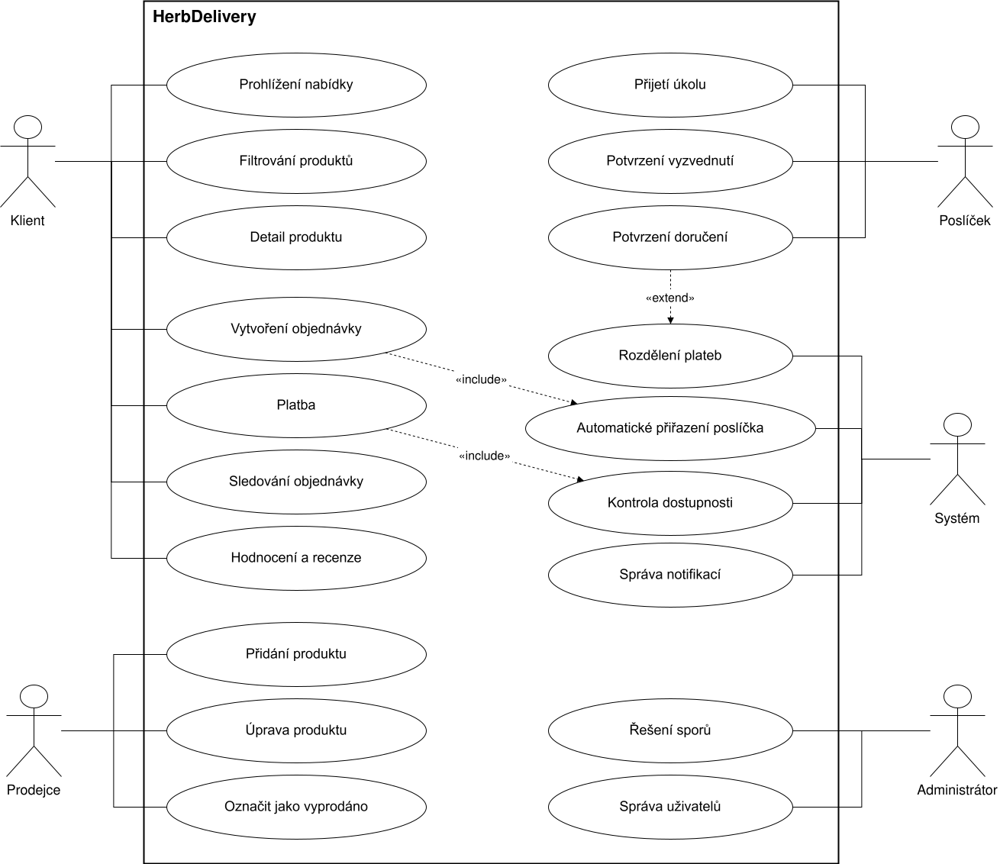
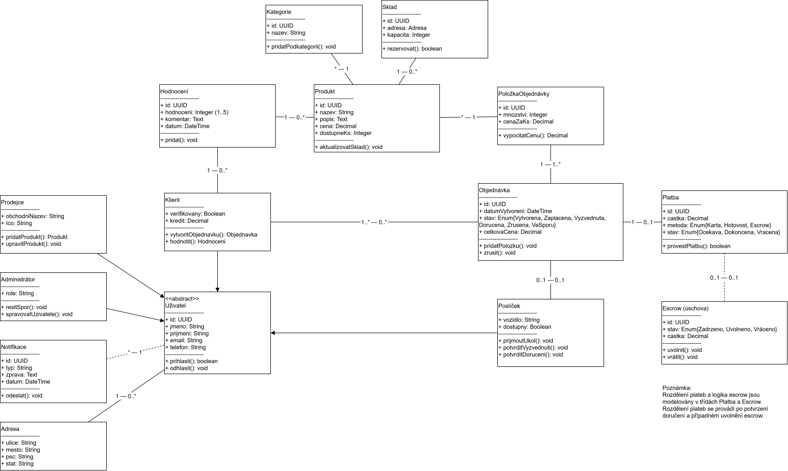
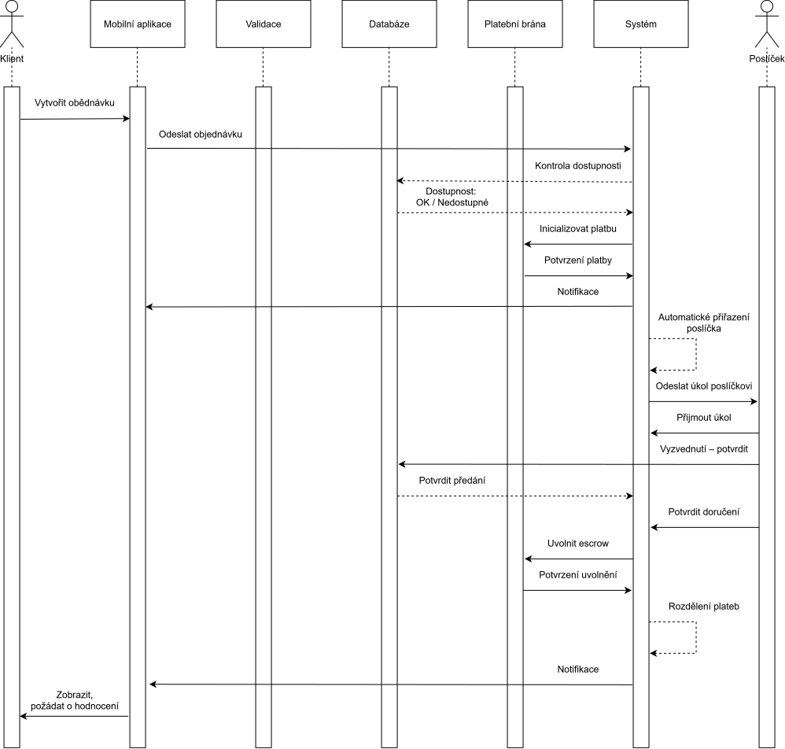
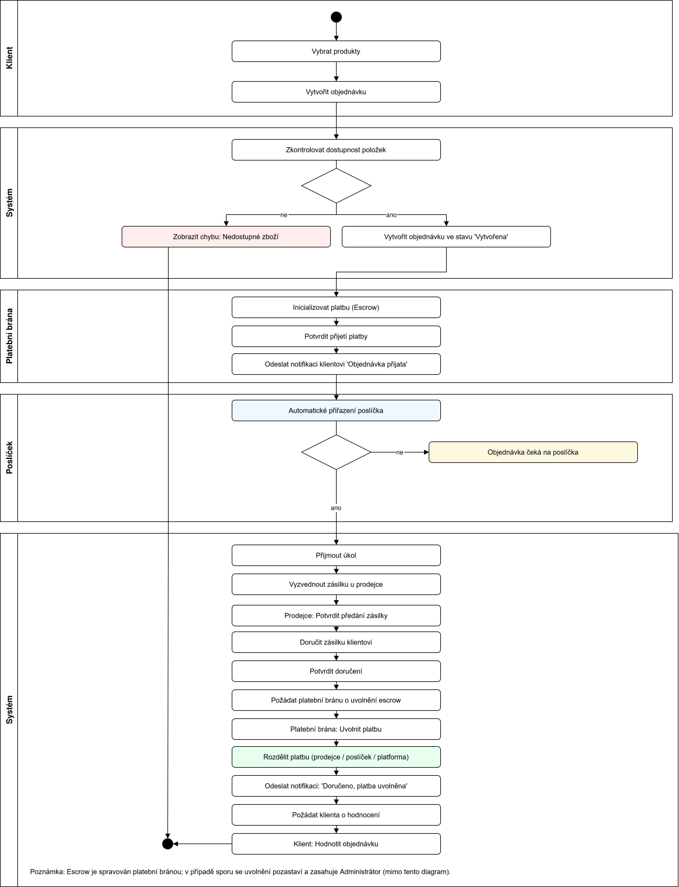
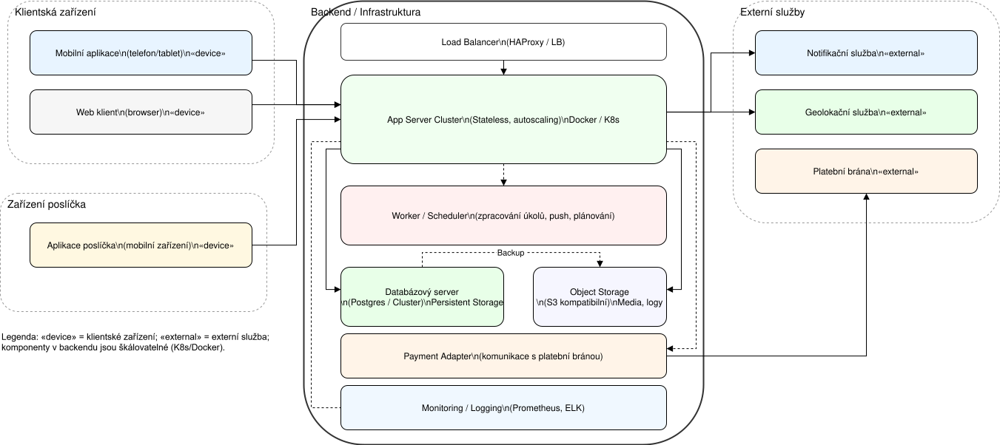

Tento dokument shrnuje význam a obsah pěti hlavních UML diagramů systému HerbDelivery.

Use‑case diagram popisuje funkční chování systému z pohledu uživatelů. Ukazuje hlavní aktéry (Klient, Prodejce, Poslíček, Administrátor) a jejich interakce se systémem. Diagram definuje, jaké funkce jsou dostupné jednotlivým rolím a jaké procesy systém vykonává automaticky, například kontrolu dostupnosti nebo přiřazení poslíčka. Slouží jako přehled toho, co systém umí, a tvoří základ pro detailnější návrh.

Class diagram definuje datový model systému. Obsahuje hlavní entity, jejich atributy, metody a vztahy mezi nimi. Základem je abstraktní třída Uživatel, ze které dědí Klient, Prodejce, Poslíček a Administrátor. Diagram popisuje strukturu objednávek, položek, produktů, plateb a escrow mechanismu. Násobnosti u asociací určují, kolik objektů může být ve vztahu. Diagram slouží jako podklad pro návrh databáze a API.

Sequence diagram ukazuje časovou posloupnost komunikace mezi částmi systému při zpracování objednávky. Zobrazuje vytvoření objednávky, kontrolu dostupnosti, platbu přes escrow, přiřazení poslíčka, vyzvednutí, doručení a uvolnění platby. Diagram zachycuje i komunikaci s externími službami, jako je platební brána nebo notifikační systém. Je klíčový pro pochopení dynamiky systému a návrh backendových procesů.

Activity diagram popisuje tok činností v rámci procesu objednávky. Ukazuje jednotlivé kroky od výběru produktů až po hodnocení doručené objednávky. Pomocí rozhodovacích uzlů znázorňuje, jak systém reaguje na různé situace, například nedostupné zboží nebo nenalezení poslíčka. Swimlanes rozdělují odpovědnosti mezi Klienta, Systém, Platební bránu, Poslíčka a Prodejce. Diagram poskytuje přehled o tom, jak proces probíhá napříč celým systémem.

Deployment diagram znázorňuje fyzické nasazení systému. Ukazuje klientská zařízení, mobilní aplikaci, webový klient, zařízení poslíčků a backend infrastrukturu. Backend je rozdělen na load balancer, aplikační servery, worker procesy, databázi a objektové úložiště. Diagram také obsahuje externí služby, jako je platební brána, notifikační systém a geolokační služby. Slouží k pochopení architektury systému, jeho škálování a bezpečnostních hranic.